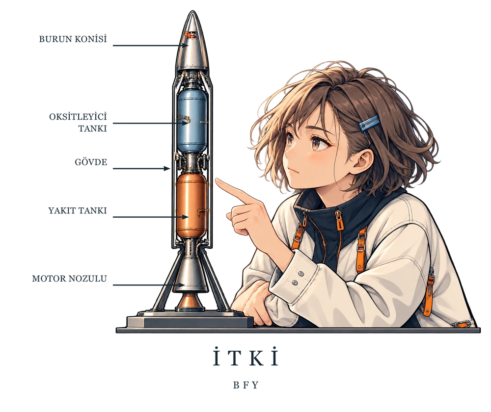

Tasarım önizlemesi. Kesin kumaş renkleri ve ürün üzerindeki baskı görünümü satış öncesinde paylaşılacak.
ANIME SERİSİ / BFY
İTKİ
Yukarı bakmaya devam.
Bir roketin içinde neler var? Burun konisi, gövde, tanklar ve motor nozulu; meraklı bir karakterin yanında küçük bir keşif haritası.
ÜRÜN SEÇENEĞİ
Koleksiyon hazırlanıyor
Hoodie seçeneği · Önde küçük bir amblem, arkada ana çizim.
Çıktığında haberim olsun.
Seçtiğin tasarımı Instagram’dan bize yaz. Satışa açıldığında bu ürün için DM’den haber verelim.
Bu bir beden seçimi veya sipariş değildir. Kesin ölçü tablosunu satış öncesi paylaşacağız.
@benfizikyapamiyorum profilindeki Mesaj düğmesinden metni gönder. Talebin bize mesajı gönderdiğinde ulaşır; burada otomatik kayıt oluşturulmaz.
Ödeme alınmaz, ürün ayrılmaz. Fiyat ve satış tarihi henüz kesinleşmedi.
Bedenimi nasıl seçmeliyim?
Üzerine iyi oturan bir kıyafeti düz zeminde ölç. Seçtiğin ürünün kesin beden tablosu satış öncesinde burada yer alacak. Ölçüm rehberini aç →
Baskı yerleşimi
Önde küçük bir amblem, arkada ana çizim. Üretime uygun ölçüler ve kumaş üzerindeki son görünüm, satış açılmadan önce ürün fotoğraflarıyla gösterilecek.
Teslimat ve iade
Şu anda ödeme ve sipariş alınmıyor. Kesin fiyat, kargo, teslimat süresi ve iade koşulları satış açılmadan önce paylaşılacak.